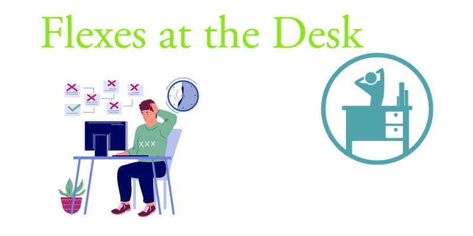

Built Different
Around the country more students and teachers are now working from home and mental and physical wellness is declining while our bodies adjust to new living enviroments. Being at home can reduce activity by providing more distractions and leisure activities such as enjoying a snack or indulging in social media applications. Along with distractions and daily obligations, self-care is being neglicted and it's having negative affects on mood and productivity. Luckily, simple SMS reminders and encouragement can help students and home office workers to get up and get active!
Stretching
Breathing
Break Time
How to Use Flexes:
- Text 517.555.4811 and you'll receive a prompt to activate the Flexes at the Desk schedule reminders. Choose how frequent you would like to do an activity by replying ""